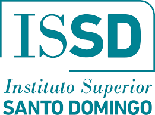

Cursado La materia se organiza en 12 clases. Cada clase posee contenidos que se desarrollan en instancias de participación como foros y entregas de trabajos. Cada semana se inicia un lunes. Es muy importante que sigas el ritmo que la materia propone para llegar adecuadamente preparado a las instancias de evaluaciones. Evaluaciones Para regularizar la materia, es necesario que obtengas un 4 (el 60% correcto) o más en todos los trabajos solicitados en el campus (Desempeños Prácticos, Cuestionarios, Trabajos a Desarrollar, etc.). La primera de ellas se compone de una entrega parcial en la clase 6 y la segunda una entrega parcial en la clase 11. En el caso de que no entregues en término o repruebes algunos desempeños, deberás contactarte con el tutor para que te explique cómo realizar una recuperación o contar con un plazo extraordinario para regularizar. Es muy importante que lo hagas antes de finalizar el cursado para no perder ninguna oportunidad. Si aun así no lograras la regularidad, te queda la posibilidad de rendir el examen final en condición de libre, el cual incluye preguntas o actividades adicionales a las que corresponden al final de un alumno regular. PROMOCION: Aquellos estudiantes que entreguen en tiempo y forma (hasta 7 días después de publicarse el desempeño o cuestionario) con una nota mayor o igual a 7 en ambos parciales, podrán acceder a un coloquio de promoción dónde en caso de aprobarlo, tendrán la posibilidad de promocionar la materia, por lo cual no deberán rendir examen final.